báo giá cây trúc đã xử lý
8.500 ₫

800.000 ₫650.000 ₫
Giữa nhịp sống đô thị hiện đại, mái lá (lợp guột ) như một nét chấm phá độc đáo, đưa con người ta trở về với cảm giác mộc mạc, yên bình của làng quê xưa. Không chỉ là vật liệu lợp mái đơn thuần, lá guột còn là biểu tượng của lối kiến trúc xanh – gần gũi với thiên nhiên, thân thiện với môi trường. Chất liệu tự nhiên cực kỳ được ưa chuộng trong nhiều công trình kiến trúc nghỉ dưỡng, quán cà phê, nhà hàng hay resort,…
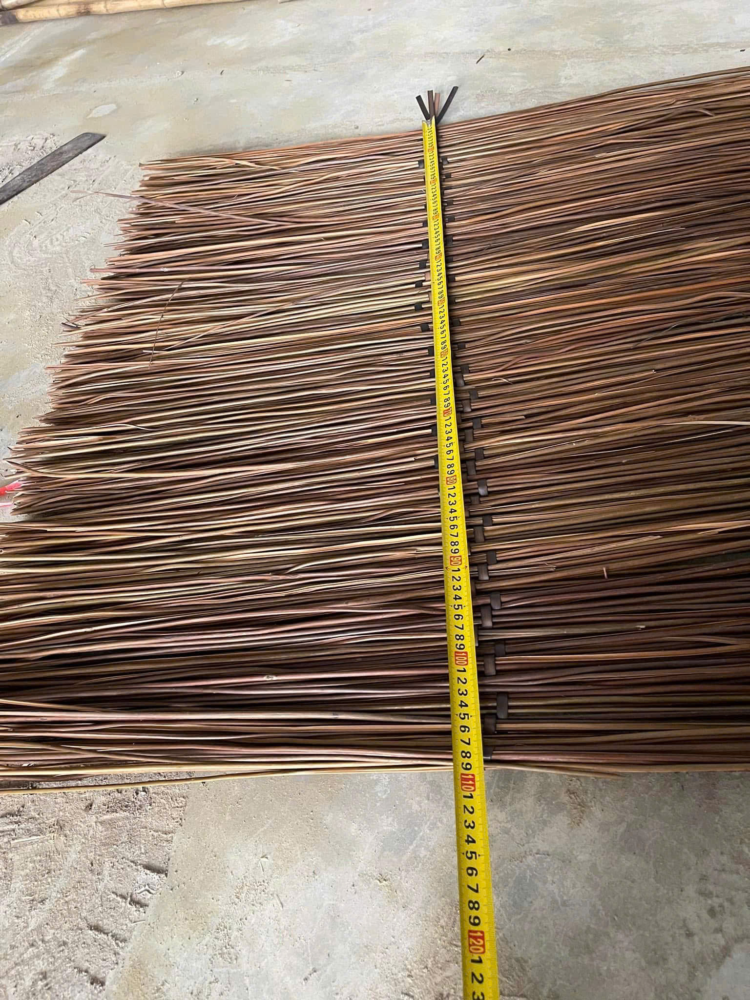
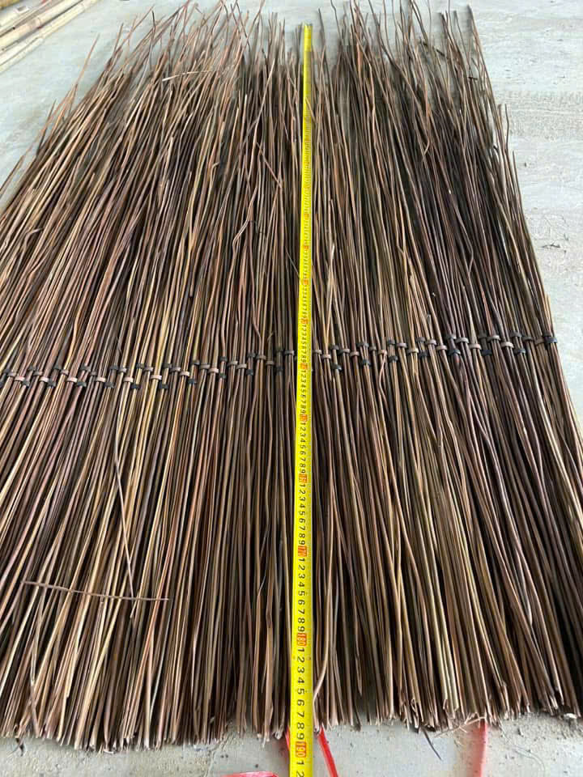
Với kinh nghiệm thi công nhiều công trình tre trúc lớn nhỏ trên toàn quốc, Tre Việt Building tự hào mang đến cho quý khách hàng quy trình thi công mái lá (lợp guột )bài bản, chuyên nghiệp, giàu giá trị thẩm mỹ. Cùng theo dõi bài viết để biết thêm thông tin chi tiết bạn nhé.
Mái lá (lợp guột ) hay còn có tên gọi khác là lá vọt, thường tập trung phân bố chủ yếu ở các vùng nông thôn phía Bắc Việt Nam. Lá có màu xanh đậm, bản dài, mềm dai và rất bóng mượt. Và chắc chắn rồi, để có được vật liệu thi công đẹp, chất lượng, mái lá (lợp guột ) cần phải trải qua quy trình chọn lọc và xử lý kỹ lưỡng. Tại Tre Việt Building, chúng tôi chỉ thu hoạch sợi guộc già , đảm bảo cứng và chắc. Sau đó mang lá đi phơi khô, tiến hành xử lý mối mọt và nấm mốc đúng cách.
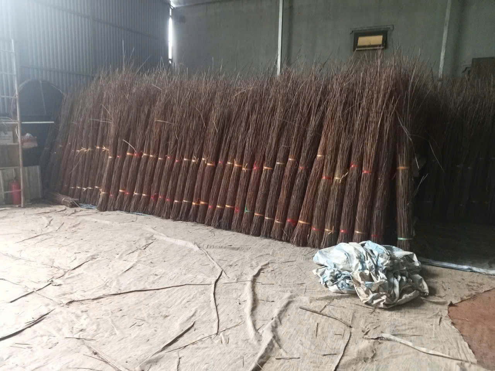
Nhờ được chăm chút cẩn thận trong từng khâu thực hiện mà vật liệu tự nhiên không chỉ giữ nguyên vẻ đẹp mộc mạc vốn có mà còn đảm bảo độ bền cao cùng khả năng chống chịu tốt. Từ đó trở thành vật liệu lợp mái lý tưởng cho rất nhiều công trình kiến trúc từ truyền thống đến hiện đại.
Với kết cấu chồng lớp dày từ 18 – 20cm, mái lá (lợp guột ) sau khi thi công có khả năng cách nhiệt hiệu quả, giúp cho không gian bên trong luôn thông thoáng và mát mẻ suốt quanh năm. Điều này đặc biệt phù hợp với kiểu khí hậu nhiệt đới tại Việt Nam.
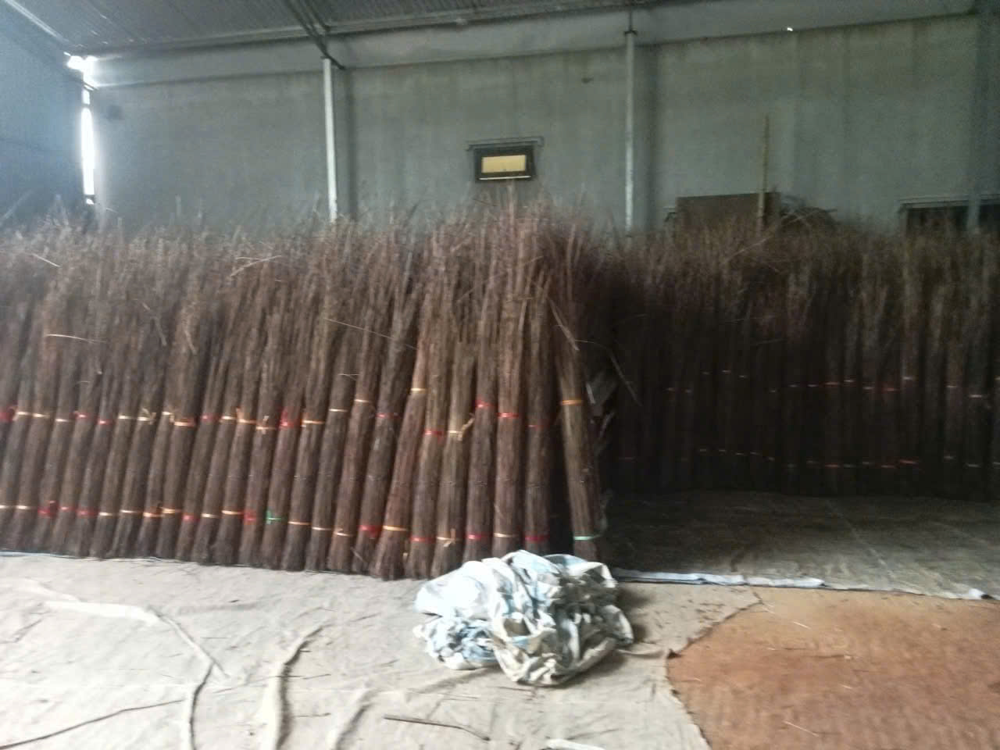
Sau khi được xử lý đủ thời gian, đúng kỹ thuật bằng nhiều phương pháp truyền thống như hun khói, ngâm thảo mộc thì mái lá guột có thể giữ độ bền lên đến 10 hoặc 15 năm. Hay thậm chí tuổi thọ của vật liệu tự nhiên có thể kéo dài lâu hơn nữa nếu được bảo dưỡng định kỳ.
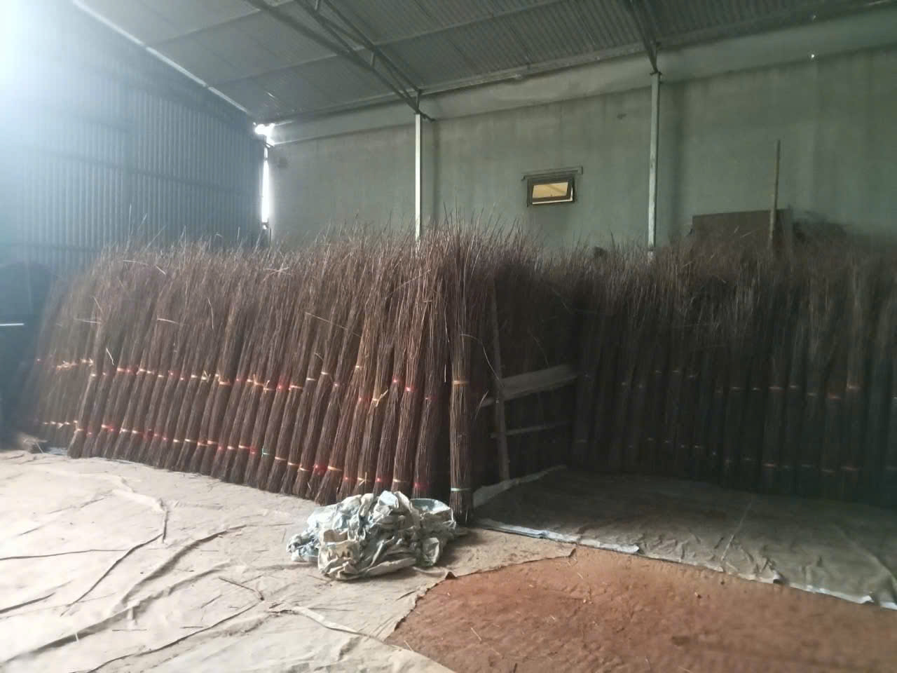
Rõ ràng, mái lá (lợp guột ) là vật liệu hoàn toàn tự nhiên, dễ phân hủy sinh học và không phát sinh rác thải công nghiệp. Vì thế nên, thi công lơp mái lá (lợp guột )chính là một giải pháp xanh giúp bảo vệ hệ sinh thái.
Tại Tre Việt Building, mỗi công trình mái lá (lợp guột )không chỉ là một sản phẩm kiến trúc mà còn là kết tinh của sự tỉ mỉ, hiểu biết sâu sắc về vật liệu tự nhiên và kỹ thuật truyền thống. Dưới đây là quy trình thi công chuẩn chỉnh, đảm bảo chất lượng và tính thẩm mỹ cao mà bạn có thể tham khảo:
Quy trình thi công lợp mái lá (lợp guột )tại Tre Việt Building sẽ bắt đầu bằng việc lắng nghe nhu cầu của khách hàng, từ mục đích sử dụng, diện tích không gian, phong cách kiến trúc cho đến nguồn ngân sách dự kiến. Dựa trên những thông tin ban đầu này mà đội ngũ sẽ đưa ra những tư vấn sơ bộ và hướng dẫn khách hàng các bước thực hiện tiếp theo.
Đội ngũ kỹ thuật của Tre Việt Building sẽ tiến hành khảo sát chi tiết địa hình, hướng gió, hướng nắng, độ ẩm cùng các yếu tố môi trường tại vị trí mà khách hàng yêu cầu xây dựng. Từ đó đưa ra phương án thiết kế sơ bộ, lựa chọn cấu trúc khung tre – mái lá (lợp guột ) phù hợp với điều kiện tự nhiên và nhu cầu sử dụng mà khách hàng mong muốn.
Sau khi phương án được chốt, đội ngũ sẽ tiến hành dựng bản vẽ 2D/3D hoàn chỉnh. Đồng thời, chúng tôi cũng sẽ báo giá trọn gói, bao gồm toàn bộ chi phí vật liệu, nhân công, tiến độ thi công và thời gian bảo hành, hậu mãi.
Khi khách hàng đã đồng ý sử dụng dịch vụ hợp đồng chính thức được ký kết, đơn vị Tre Việt Building sẽ bắt tay vào quá trình chuẩn bị nguyên vật liệu.
Mặt bằng công trình được đội ngũ thi công định vị chính xác theo bản vẽ. Sau đó tiến hành đào móng và chôn cột tre với độ sâu từ 50 – 70cm, đảm bảo cố định bằng bê tông để kết cấu được vững chắc.
Tiếp theo, đội ngũ kỹ thuật tiến hành lắp các xà ngang, xà dọc và khớp nối các chi tiết lại với nhau để tạo thành bộ khung hoàn chỉnh. Các mối nối được cố định bằng dây buộc truyền thống hoặc bu-lông, tùy theo vị trí và yêu cầu kỹ thuật cụ thể.
Tiếp đến là công đoạn lắp hệ thống xà mái, giằng chéo và các thanh đỡ. Bước này đóng vai trò then chốt trong việc xây dựng mái lá, giúp đảm bảo kết cấu vững chắc, an toàn và duy trì độ bền cho toàn bộ công trình.
lợp mái lá (lợp guột )sẽ được chúng tôi lợp theo nguyên tắc từ dưới lên trên. Từng lớp được xếp chồng khít lên nhau để đảm bảo khả năng thoát nước và che chắn nắng mưa tối ưu, vượt trội. Độ dày mái lý tưởng là từ 18 – 20cm, giúp tăng cường khả năng cách nhiệt, giữ mát vào mùa hè và ngăn thấm nước vào mùa mưa.

Tiến hành thi công các hạng mục như vách, cửa, sàn và các chi tiết nội – ngoại thất bằng tre, nứa hoặc vật liệu tự nhiên khác. Tùy vào yêu cầu của từng công trình mà đội ngũ có thể tích hợp thêm hệ thống chiếu sáng, mành tre, mái phụ hoặc các tiện ích liên quan.

Sau khi hoàn thiện, công trình được nghiệm thu và bàn giao đúng tiến độ. Tre Việt Building cam kết chính sách bảo hành trọn đời và hỗ trợ bảo trì định kỳ để đảm bảo công trình luôn đạt được trạng thái tốt nhất.

Liên hệ để được tư vấn và báo giá ưu đãi ngay hôm nay bạn nhé!
Tre Việt Building tự hào là đơn vị tiên phong trong lĩnh vực thi công kiến trúc xanh, với hơn 10 năm kinh nghiệm thực chiến cùng hàng trăm công trình, dự án thực tế trên toàn quốc. Đồng thời, chúng tôi cũng đảm nhận cung cấp, phân phối nguồn nguyên vật liệu tự nhiên uy tín, chất lượng với mức giá thành cạnh tranh, hấp dẫn.

Và sau đây là những lý do mà bạn nên lựa chọn sử dụng dịch vụ tại Tre Việt Building:
Tre Việt Building sở hữu một đội ngũ kỹ sư giàu chuyên môn, kinh nghiệm. Chúng tôi am hiểu sâu sắc về đặc tính của vật liệu và nắm vững kỹ thuật lợp mái lá guột để đảm bảo chất lượng tối ưu. Và chắc chắn rằng, tất cả các công trình được thi công, thiết kế bởi đội ngũ của Tre Việt Building đều mang lại sự hoàn hảo về tính thẩm mỹ, độ bền và khả năng chống chịu vượt trội.
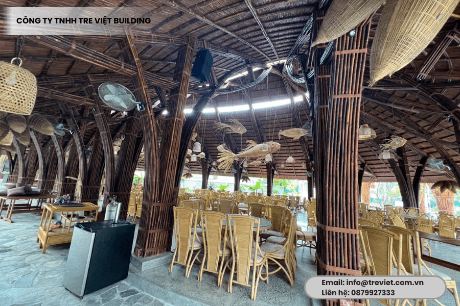
Lá guột của chúng tôi được chọn lọc kỹ lưỡng từ vùng nguyên liệu sạch và chất lượng. Qua quy trình xử lý tỉ mỉ, đủ thời gian và đúng kỹ thuật, mỗi tấm lá guột đều đảm bảo đạt tiêu chuẩn cao. Ngoài việc sở hữu nét đẹp tự nhiên thì vật liệu thi công này còn bền bỉ, chắc chắn, có khả năng chống mối mọt, nấm mốc và tuổi thọ lâu dài.
Tre Việt Building cam kết bảo hành chất lượng công trình, bảo trì mái định kỳ theo yêu cầu của khách. Ngoài ra, nhân sự của chúng tôi cũng sẽ hướng dẫn khách cách bảo dưỡng, chăm sóc mái đúng chuẩn để giúp mái luôn bền đẹp và phát huy tối đa công năng.
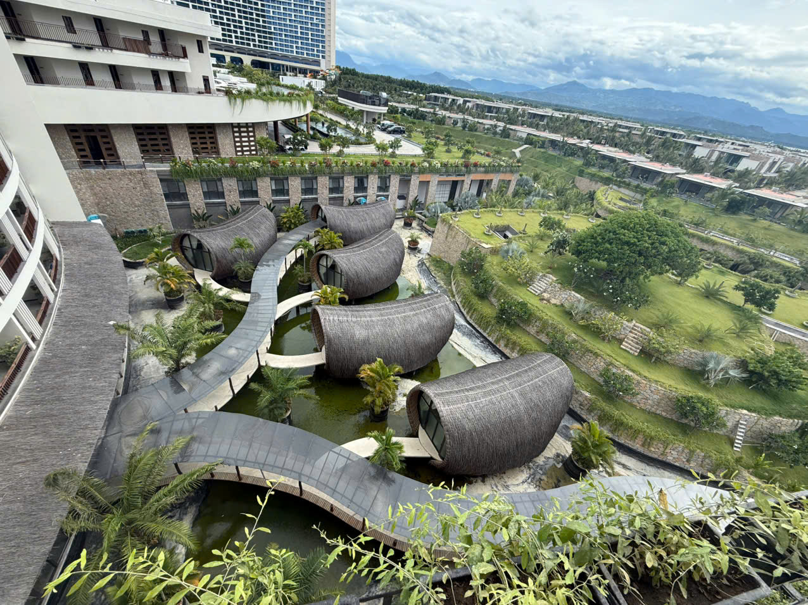
Chi phí lợp mái lá guột tại Tre Việt Building phụ thuộc vào các yếu tố bao gồm:
Tre Việt Building cam kết cung cấp mức giá dịch vụ cạnh tranh và hấp dẫn. Chúng tôi đảm bảo tư vấn và báo giá minh bạch, phù hợp với ngân sách, giúp khách hàng tối ưu chi phí mà vẫn đảm bảo chất lượng cao tuyệt đối.
— các công trình lợp mái guộc.
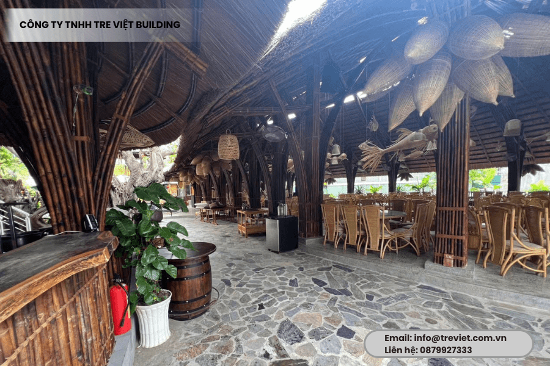


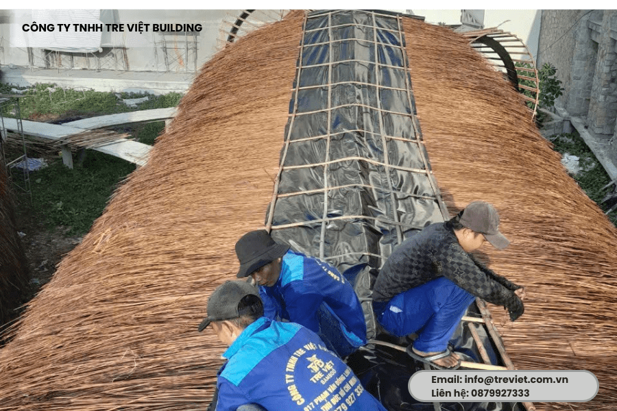
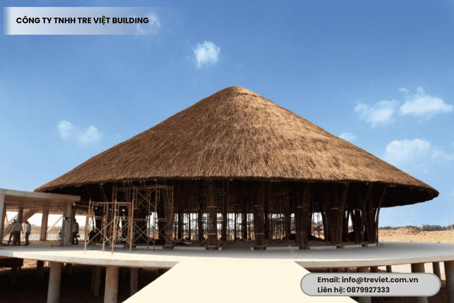
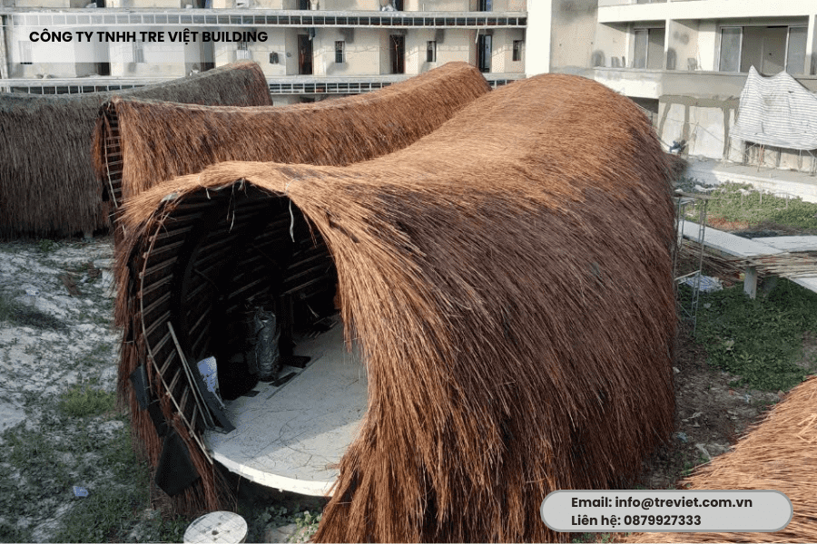
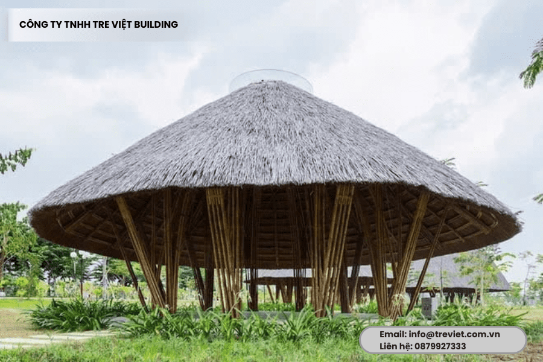
Thông tin liên hệ:
CÔNG TY TRÁCH NHIỆM HỮU HẠN TRE VIỆT BUILDING
Địa chỉ: 917 Phạm Văn Đồng, Phường Linh Xuân, Thành phố , Thành Phố Hồ Chí Minh.
8.500 ₫

Cây tre luồng được xem là loại vật liệu xanh thân thiện với môi trường, đang được ứng dụng phổ biến trong nhiều công trình xây dựng hiện nay.
30.000 ₫28.500 ₫

Mành tre trúc ngày nay rất phổ biến, được sử dụng rộng rãi trong trang trí nhà cửa nhờ những ưu điểm nổi bật mà mành tre trúc mang đến.
170.000 ₫

Nguyên liệu cây tre tầm vông ngày càng được ứng dụng nhiều trong đời sống, với nhiều năm kinh nghiệm Tre Việt là đơn vị có nguồn cung dồi dào, chất lượng.
17.000 ₫15.000 ₫